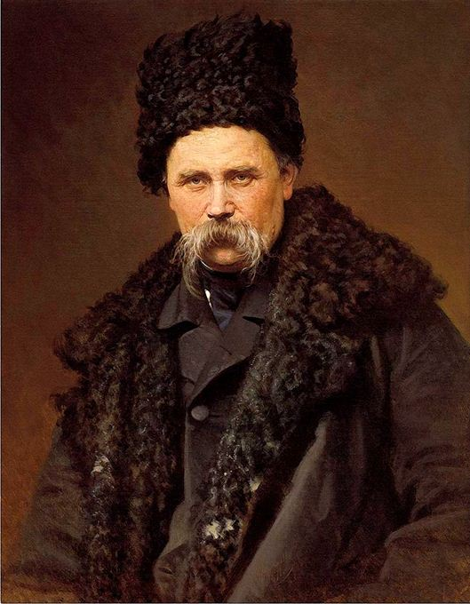
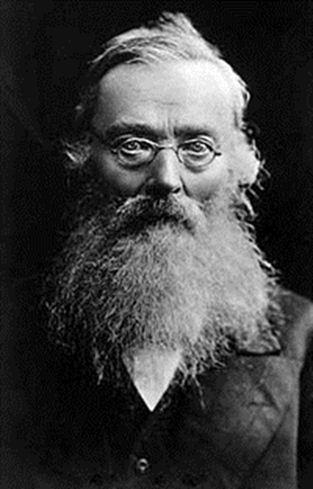

« Notre âme ne peut pas mourir, La liberté ne meurt jamais. » (Taras Chevtchenko1, poète ukrainien)
 Taras ChevtchenkoDu point de vue linguistique, une langue représente la totalité des dialectes qui subissent les mêmes événements linguistiques (changements ou innovations linguistiques). Le prince Nikolaï Troubetzkoï2 a démontré que, de ce point de vue, on peut parler d’une unité linguistique du slave commun jusqu’au XIVe siècle, car, jusqu’à cette époque, des phénomènes linguistiques communs influent sur les « parlés » des gens qui peuplent une certaine zone géographique dont la répartition fait encore débat en ce début de XXIe siècle.
Il y a, au XVe siècle, un certain paradoxe car il y a à cette époque déjà différentes langues slaves, et il ne s’agit pas seulement de dialectes du slave commun. Cela signifie que, quoique la langue slave commune existe encore, on trouve dans son aire de diffusion non seulement des dialectes, mais également des langues, avec des frontières linguistiques relativement fermées.
A ce propos, le passionné pourra toujours se référer aux travaux d’Antoine Meillet3 et notamment à son article, paru dans la « Revue des études slaves4 », « Les origines du vocabulaire slave : I. — Le problème de l'unité balto-slave »
Ces dialectes ont subi à leur tour des événements linguistiques qui n’ont pas influencé les autres zones linguistiques. C’est pourquoi, aujourd’hui, le promeneur trouvera des similitudes fortes entre le biélorusse, l’ukrainien, le russe et autres langues parlées dans ces contrées. En Europe occidentale, il n’y a pas eu de situation identique : la désintégration de l’unité, que ce soit la chute de l’Empire romain ou le partage de l’Empire de Charlemagne qui en soit l’origine, coïncidait avec la formation de nouvelles zones linguistiques… Or une langue permet, non seulement, de communiquer mais, également, de forger une part de la culture commune et, donc, du temps de la « Rous’ » on peut parler d’un espace culturel commun pour les Ukrainiens, les Biélorusses et les Russes, et ce, au moment où un espace culturel national ukrainien existait de façon autonome.
Si les Serbes, les Croates, les Tchèques et les autres peuples slaves existaient déjà à l’époque de l’unité slave et se sont conservés en assimilant d’autres petits peuples, les Russes, les Ukrainiens et les Biélorusses formaient encore une seule entité à cette époque-là. Avant le XVIIe siècle, le mot « Ukraine » signifiait avant tout une zone étroite, de cent à trois cents km de largeur, qui séparait la forêt-steppe au nord des régions méridionales des steppes et des forêts-steppes. C’était un territoire de colonisation agricole et si, dans certaines régions, les Ukrainiens disent « nous sommes des Russes », cela ne signifie pas du tout une identification avec les Grand-Russes ethniques. Le terme Rous désignait, à l’époque de la Rous kiévienne, deux réalités : la Rous proprement dite5, c’est-à-dire les territoires de Kiev et de Tchernigov, et « toute la Rous », c’est-à-dire tous les territoires qui dépendaient du pouvoir des princes de Kiev, même si ce pouvoir n’était parfois que nominal. La Rous d’origine a disparu, avec les invasions mongoles du XIIIe siècle, pour donner naissance à la Moscovie6 devenue, depuis, la Russie.
La revendication d’une Ukraine « ukrainienne » tire ses racines de la confusion due à la Révolution française qui se répand dans tous les pays de culture européenne. Avant la Révolution française, la nation est une notion relativement vague, mal définie, peu différente de celle de peuple. Après la Révolution, en France, elle signifie à la fois l’expression politique du peuple et la notion d’Etat. Le nationalisme, qui tend à faire correspondre des entités politiques spécifiques avec des peuples déterminés, se développe rapidement durant la première moitié du XIXe siècle. La prise de conscience politique des classes populaires au début du XIXe siècle est alors l’une des causes des soulèvements de 1848 en Europe où souvent nationalisme et libéralisme et même socialisme seront mêlés. En Russie, ce « Printemps des Peuples7 » se traduira par des réformes avec, par exemple, la possibilité pour les serfs le droit d’acquérir des immeubles et des terres, à condition que leurs maîtres soient d’accord et que les terres ne soient pas peuplées puis l’abolition du servage en 18618.
Le terreau de 1848 avait été préparé, il est vrai, par les mouvements de romantisme culturel, qui traversent toute l’Europe au début du XIXe siècle, se traduisant, entre autres, par un retour vers un passé idéalisé : on redécouvre les racines culturelles et linguistiques des différents peuples européens, notamment le patrimoine médiéval au détriment de l’antiquité. Viollet-le-Duc9 ou Michelet10 sont, en France, l’exemple de « Romantique » qui ont marqué tout un peuple.
A la même époque, à Kiev, des intellectuels ont cherché à définir un caractère spécifique à la nation ukrainienne : une nation paysanne possédant sa propre histoire. Ainsi, un Collectif secret dirigé par Nicolaï Kostomarov, rédigea, en 1847, un petit opuscule qui explique ce qu’et la Nation ukrainienne : « Le Livre de la Genèse du Peuple Ukrainien11 » dont je tire les extraits suivants :
« 72. Et l’Ukraine n’aimait ni le tsar ni le pan, elle organisa la Cosaquerie, c’est-à-dire une confrérie véritable, où chacun, en en devenant membre, était le frère des autres, qu’il eût été auparavant seigneur ou esclave, pourvu qu’il fût chrétien, et les Cosaques étaient tous égaux entre eux, et les anciens étaient élus à la Rada et devaient être les serviteurs de tous, selon la parole du Christ, et il n’y avait parmi les Cosaques ni pompe seigneuriale ni titre.
(...)
76. Et de jour en jour, la Cosaquerie croissait et multipliait.
Bientôt, en Ukraine, il n’y aurait eu que des Cosaques tous libres et égaux, et l’Ukraine n’aurait eu au-dessus d’elle ni tsar ni seigneur, en dehors du Dieu unique, ce que voyant la Pologne l’aurait imitée et, après elle, tous les autres pays slaves.
(...)
78.Or les pans virent que la Cosaquerie grandissait et que, bientôt, tous les hommes seraient Cosaques, c’est-à-dire libres. Ils interdirent aussitôt à leurs chefs de devenir Cosaques et voulurent frapper le petit peuple comme du bétail de façon qu’il n’y eût chez lui ni sentiment ni raison. Et les seigneurs se mirent à accabler de corvées leurs serfs, ils les livraient aux Juifs pour subir des tortures telles que n’en avaient connues que les premiers chrétiens : ils les écorchaient vifs, faisaient cuire leurs enfants dans des chaudrons, forçaient les mères à allaiter des chiens.
(...)
83.Alors l’Ukraine se rapprocha de la Moscovie et s’unit à elle, comme un peuple slave à un autre peuple slave, indivisiblement, mais sans se mêler, à l’image des trois hypostases de Dieu, comme un jour s’uniront entre eux tous les peuples slaves.
84.Mais bientôt l’Ukraine vit qu’elle était tombée en esclavage car, dans sa simplicité, elle n’avait pas compris ce qu’était le tsar de Moscou, or le tsar de Moscou n’était qu’une idole et un tortionnaire.
93. Elle n’a pas succombé, car elle n’a voulu connaître ni le tsar ni le noble. Il y avait un tsar, mais il lui était étranger, il y avait des nobles, mais ils lui restèrent étrangers. Et quoique ces avortons fussent de sang ukrainien, cependant ils ne déshonoraient pas de leurs bouches ignobles la langue ukrainienne, et eux-mêmes ne s’appelaient pas ukrainiens, mais un véritable Ukrainien, qu’il soit d’humble extraction ou de race seigneuriale, ne doit aimer ni tsar ni seigneur, mais aimer et avoir présent à la pensée un seul Dieu, Jésus-Christ, Tsar et Seigneur sur le ciel et la terre.
(...)
104. Et l’Ukraine sera une république indépendante dans l’union slave. »
A cet égard, je vous recommande de lire l’article que consacre Catherine B. Clay sur « Le rôle de l’ethnologie universitaire dans le développement d’une nation ukrainienne dans l’empire russe, 1830-1850 » dans lequel elle montre que l’enseignement académique a procédé à l’éveil d’une conscience nationale ukrainienne.
L’homme qui fut le plus important pour le mouvement nationaliste ukrainien fut Taras Chevtchenko12 (1814-1861). Il étudia à l’Académie d’Art de St Pétersbourg et se consacra plus tard à la poésie. Son poème « Haïdamaky » racontant la révolte des Haïdamakes (paysans et cosaques ukrainiens) en 1867 contre le royaume de Pologne-Lituanie. Chevtchenko était membre du cercle littéraire Cyrille et Méthode, créée en 1845 par des universitaires kiéviens, et dédié corps et âme à la cause nationale ukrainienne. Les Nationalistes ukrainiens se réfèrent toujours à kozatchtchina (la Cosaquerie) et en conservent une vision idéalisée au point que les associations cosaques comptent des millions d’adhérents et sont le symbole visible de l’Ukraine car cette période cosaque, jugée héroïque malgré les pogroms dirigés contre les uniates et les juifs, constitue le mythe fondateur de l’Ukraine. En Russie, Vladimir Poutine tente, également, de faire renaître le mythe cosaque…
Russes et Ukrainiens sont deux amis, qui voyagèrent dans la même voiture, devisant ensemble lors du trajet. A un moment ils sont descendus et sont partis. Chacun de son côté ?
Partager cette page